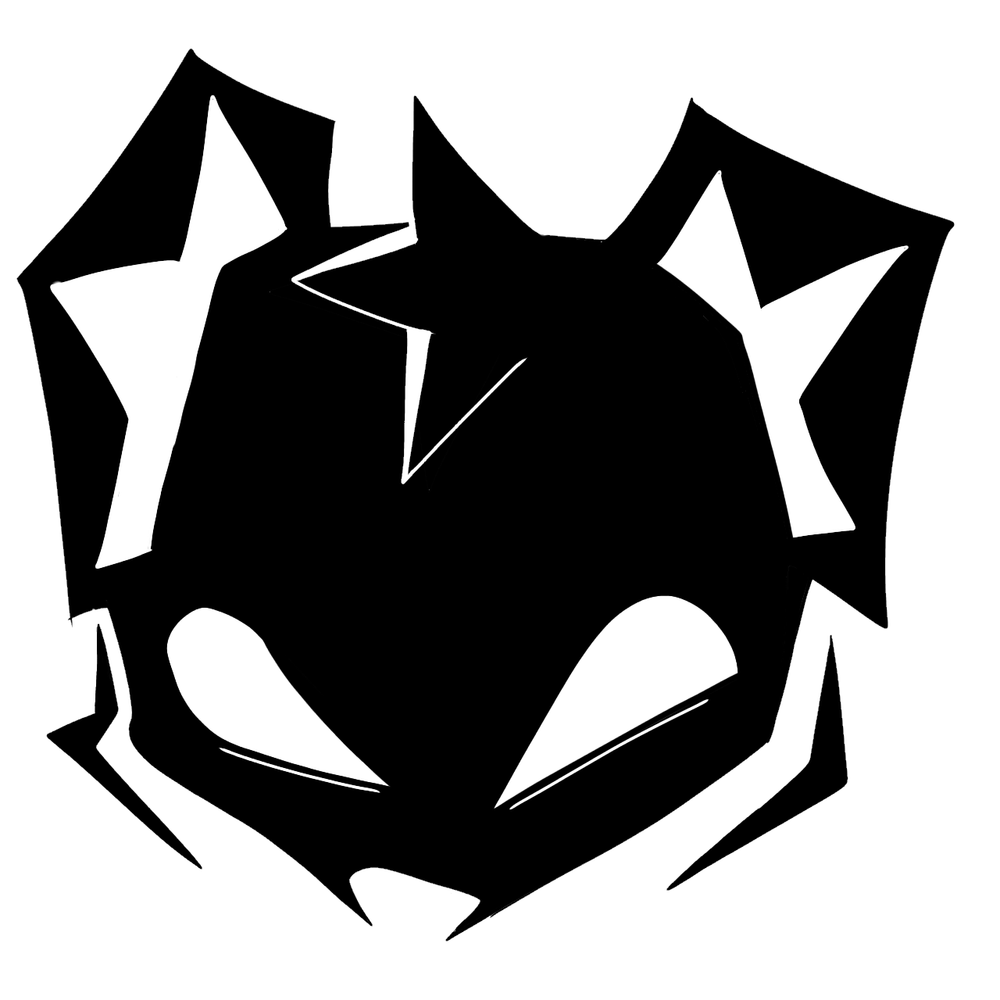

SENREF
filhartstudioTerror analógico ambientado en el sur de Chile.
UE5
BLUEPRINTS
Blender
Soy Programador de Videojuegos y Diseñador 3D, egresado de Animación Digital en la Universidad Mayor. Me especializo en la arquitectura técnica y programación visual con Blueprints en Unreal Engine 5, complementado con la creación de entornos y assets 3D en Blender.
A lo largo de mi formación y proyectos, he demostrado creatividad, atención al detalle y capacidad para trabajar en equipo, llevando conceptos desde la idea inicial hasta un producto jugable. Estoy buscando una oportunidad para aplicar mis conocimientos y crecer profesionalmente en la industria.

Actualmente trabajo en el desarrollo de "Forgotten: Whispers Of The Past". Mi rol se centra en la arquitectura técnica: optimización de rendimiento, limpieza y refactorización de código (Blueprints/C++) y la implementación de sistemas escalables para asegurar que el juego alcance su máximo potencial técnico y visual.
Junto a mi estudio de videojuegos, lideré el desarrollo de un fangame como Director General, asumiendo también los roles de Director Técnico y Level Artist. Me encargué completamente de la programación del proyecto y de la creación de los entornos, asegurando que la visión del juego se materializara según lo planeado.
Fui ayudante académico del ramo Cinemática 3D I, donde apoyé a estudiantes en la creación de cortometrajes digitales usando Unreal Engine. Mi rol consistió en asistir al docente durante las clases prácticas y guiar al alumnado en el uso de herramientas como MetaHuman, Live Link Face y Mocap.
Realicé mi práctica profesional en el estudio Baby Team, trabajando como programador en el desarrollo de un videojuego 2D en Unity. Estuve a cargo de implementar mecánicas de juego, lógica de scripts, gestión de escenas e interfaz básica.
Terror analógico ambientado en el sur de Chile.
RPG Dark Fantasy Multiplayer. Sistema de red (Netcode), combate y dirección creativa.
Fangame de FNAF. Lideré la dirección técnica y programación de IA y mecánicas.
Juego 2D, terror ambientado en un laboratorio de experimentacion con animales, desarrollado en BabyTeam durante mi practica profesional.
Plataforma web enfocada en documentar misterios y teorías conspirativas, ya sean de este mundo u otro.
Sitio web oficial del estudio FilhArt. Diseño acorde a la estetica del estudio, centrado en mostrar contenido de videojuegos y dar a conocer quienes son.
Concepto de juego terror survival en una cabaña abandonada Fase actual: Escritura de GDD y prototipado.
Juego que implica aliens, un cultivo y un cuidador que hará todo lo posible para que no lo despidan. Fase actual: Investigación técnica.